Automatische Übersetzung
Dieser Artikel wurde automatisch aus der englischen Originalversion übersetzt.
Context Engineering für AI-Agents: Context Windows, Memory, Tools und Guardrails
TL;DR
Context Engineering ist die Pipeline, die entscheidet, was das Modell im Moment der Entscheidung sieht: Instruktionen, Beispiele, Wissen, Memory, Skills, Tools, Guardrails. Die meisten Produktions-Agents funktionieren oder scheitern genau auf dieser Ebene. Unten ist der Blueprint, zu dem ich immer wieder zurückkomme, mit den Mustern, die ich tatsächlich verwende.
Derselbe Agent, der eine 30-Minuten-Demo perfekt meistert, kann am dritten Tag in Produktion kollabieren. Fast immer hat das Scheitern nichts mit dem Modell zu tun und alles damit, was im Kontext war, als es die falsche Entscheidung getroffen hat. Ein veralteter Memory-Eintrag. Ein Dokument, das nicht mehr relevant ist. Eine Tool-Beschreibung, die sich verschoben hat. Eine vage Instruktion.
Context Engineering ist das, was du tust, um genau das zu verhindern: Du entwirfst gezielt, mit Budget, was das Modell vor jeder Entscheidung sieht. Dieser Artikel zeigt die Muster, die ich dafür verwende.
Warum Context Engineering für AI-Agents wichtig ist
Ein Customer-Support-Agent läuft drei Wochen lang und bearbeitet 200 Tickets. Dann beginnt er, Produktdetails zu halluzinieren, Kunden zu verwechseln und die falschen APIs aufzurufen. Das Modell ist nicht schlechter geworden. Der Kontext schon.
Vier Dinge haben sich 2025 verändert, die das schmerzhafter machen als früher. Agents sind keine Chatbots mehr, sondern führen Aktionen aus, was bedeutet, dass eine einzelne schlechte Kontextentscheidung durch einen Zehn-Schritte-Plan kaskadieren kann, statt nur eine schlechte Antwort zu erzeugen. Zentrales Memory und Standards wie MCP machen es möglich, persönlichen Kontext sicher zu laden — aber nur, wenn du diese Ebene sauber entwirfst; ohne Governance leakst du PII oder sprengst das Fenster. Hybrides Retrieval, Reranking und graphbasiertes Retrieval sind alle gereift, was Halluzinationen und Token reduziert, vorausgesetzt, du routest Queries tatsächlich zur richtigen Strategie. Und die meisten agentischen Piloten, die ich stagnieren sehe, stagnieren bei Kontextdesign und Governance, nicht bei Modellqualität. Eine bewusst entworfene Kontextschicht löst genau diesen Blocker.
Zentrale Konzepte für Einsteiger
Ein paar Begriffe, die im Artikel immer wieder vorkommen:
- Context window: das Arbeitsgedächtnis des Modells. Die maximale Textmenge (in Tokens), die es in einer einzelnen Entscheidung betrachten kann. Überschreitest du sie, crasht das Modell oder vergisst den Anfang.
- Tokens: die Einheit, in die Text zerlegt wird. Grob entsprechen 1.000 Tokens etwa 750 Wörtern.
- Attention budget: Sprachmodelle betrachten jedes Token-Paar, daher gibt es für n Tokens n² Beziehungen. Wenn der Kontext wächst, wird dieses Budget dünn verteilt, und Tokens in der Mitte verlieren gegenüber Anfang und Ende.
- Embeddings: numerische Repräsentationen von Text. Sie ermöglichen semantische Suche, sodass eine Query nach "dog" auch "puppy" finden kann.
- JSON Schema: ein Standard, um die Struktur von JSON-Daten zu beschreiben. Du nutzt ihn, um das Modell zu zwingen, bestimmte Felder auszugeben, wie
{"answer": "...", "citations": [...]}. - MCP (Model Context Protocol): ein offener Standard, mit dem AI-Modelle über eine gemeinsame Schnittstelle mit externen Daten und Tools sprechen können. Denk daran wie an einen USB-Port, über den du einen Agent mit lokalen Dateien, Datenbanken oder Slack verbindest.
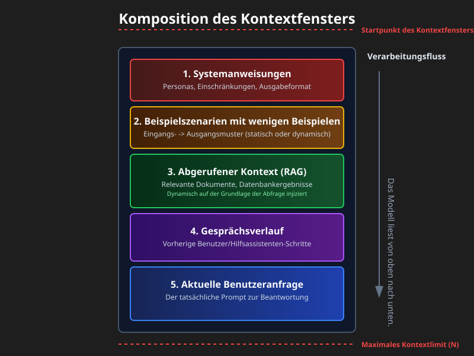
Was ist die Kontextschicht?
Eine Pipeline plus eine Policy, die Inputs pro Schritt auswählt und strukturiert, Controls anwendet (Format, Sicherheit, Policy) und dem Modell gerade genug, genau rechtzeitig bereitgestellten Kontext zuführt.
Betrachte sie als die Assembly Line, die exakt das vorbereitet, was das Modell braucht, um eine gute Entscheidung zu treffen.
Kontext ist eine endliche Ressource. Modelle haben, ähnlich wie Menschen mit begrenztem Arbeitsgedächtnis, ein Attention Budget, das mit wachsendem Kontext aufgebraucht wird. Jedes neue Token verbraucht einen Teil davon. Die technische Herausforderung ist, die kleinste Menge hochinformativer Tokens zu finden, die dir die gewünschte Antwort liefert.
Es gibt keine einzige kanonische Zerlegung — verschiedene Teams liefern verschiedene Stacks aus. Die Variante, die ich verwende, sieht so aus:
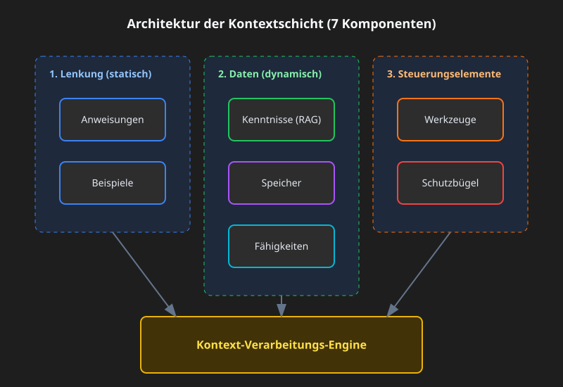
1) Instruktionen
Ein langlebiger Verhaltensvertrag: Rolle, Ton, Constraints, Output-Schema, Evaluationsziele. Moderne Modelle respektieren Instruktionshierarchien (system > developer > user), also nutze diese Hierarchie explizit, statt alles in einen einzigen Block zu stopfen.
Du greifst zu Instruktionen, wenn du konsistente Ausgaben brauchst (Reports, SQL, API calls, JSON) oder wenn du Policy erzwingen musst — PII redigieren, Requests für nicht unterstützte Dinge ablehnen, niemals interne URLs einfügen. Die Muster, die in der Praxis funktionieren, sind die offensichtlichen: Halte Policy-Blöcke getrennt von der User-Task, steuere deterministischen Downstream-Code mit JSON Schemas, und trenne system-, developer- und user-Nachrichten, damit das Modell weiß, aus welcher Stimme jede Instruktion kommt.
Ein einfaches Beispiel für einen Policy-Block:
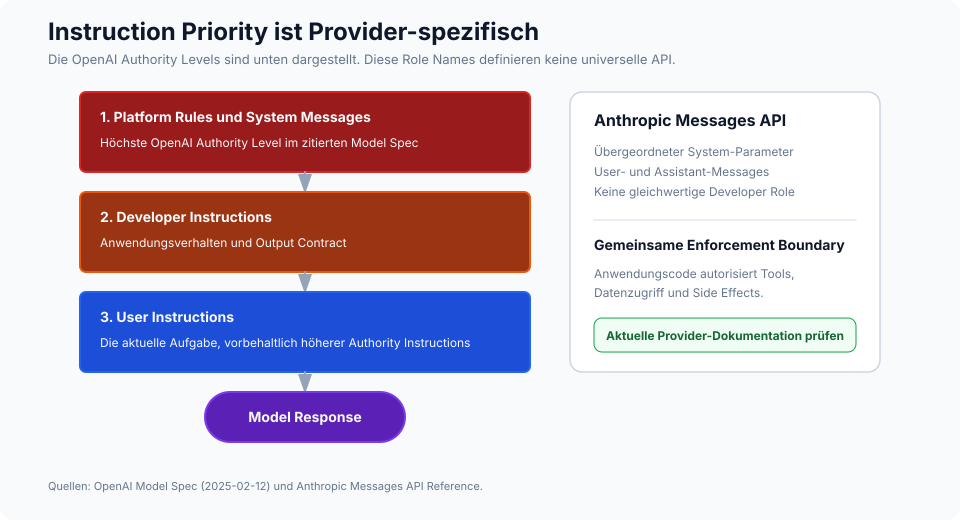
SYSTEM RULES
- Role: support assistant for ACME.
- Always output valid JSON per AnswerSchema.
- If a request needs account data, ask for the account ID.
- Never include secrets or internal URLs.
Schema-guided reasoning (SGR)
Das nützlichste Upgrade zu "dem Modell Instruktionen geben" ist, diese Instruktionen strukturell zu machen. Steuere den Agent mit JSON Schemas für den Plan, Tool-Argumente, Zwischenergebnisse und die finale Antwort. Das Modell erzeugt und konsumiert in jedem Schritt JSON, und dein Code validiert es, bevor irgendetwas anderes passiert. Das reduziert Ambiguität, macht Retries deterministisch und verbessert die Sicherheit, weil Typen und Pflichtfelder über die gesamte Schleife hinweg erzwungen werden.
Der Ablauf ist kurz. Definiere Schemas für Plan, ToolArgs, StepResult und FinalAnswer. In jedem Schritt gibt das Modell JSON aus, das zu einem davon passt. Dein Code validiert es. Wenn die Validierung fehlschlägt, versuche genau eine automatische Reparatur (zum Beispiel fehlende Pflichtfelder mit sinnvollen Defaults füllen). Wenn die Reparatur fehlschlägt, verweigere die Aktion und logge den Fall.
Konkret: Statt dass das Modell sagt "Ich suche nach den Tickets des Kunden", gibt es aus:
{
"action": "call_tool",
"tool": "search_tickets",
"args": { "customer_id": "A-123", "limit": 10 },
"expected_schema": "TicketList"
}
und dein Code validiert args gegen das Schema des Tools, bevor er die API aufruft.
2) Beispiele
Ein paar kurze Input-Output-Paare, die das exakte Format, den Ton und die Schritte zeigen, denen das Modell folgen soll. Greife zu Beispielen, wenn du ein bestimmtes Template brauchst (Tabellen, JSON, SQL, API calls) oder wenn du domänenspezifische Formulierungen und einen konsistenten Ton willst.
Ein paar Regeln, die ich immer wieder neu lerne. Zeige in deiner kanonischen Demo exakt die Zielstruktur, nicht nur eine Paraphrase davon. Kombiniere gute Beispiele mit schlechten — der Kontrast zwischen einem typischen Fehler und dem gewünschten Ergebnis lehrt mehr als zwei korrekte Outputs. Kombiniere dein JSON Schema mit zwei oder drei kurzen Demos statt mit einer langen. Und halte sie kurz: viele kleine, fokussierte Demos schlagen fast immer ein ausuferndes Beispiel.
3) Wissen
Grounding des Modells mit externen Fakten: Vektor- und Keyword-Retrieval, Reranking, Graph-Queries, Web-Fetches, Enterprise-Quellen. Das brauchst du, wenn das Modell die Antwort nicht aus seinen Gewichten kennen kann — aktuelle Fakten, private Fakten oder alles, was eine Quelle braucht.
Der Retrieval-Stack, den du standardmäßig nutzen solltest, ist hybrid (BM25 plus dense) mit einem Reranker obendrauf, um die Token-Kosten zu senken. Nutze graphbewusstes Retrieval (GraphRAG), wenn die Antwort Dokumentgrenzen überschreiten muss, und Adaptive RAG, wenn ein Query-Typ nicht für alle Fälle passt — manchmal willst du gar kein Retrieval, manchmal einen einzelnen Schuss, manchmal eine iterative Schleife.
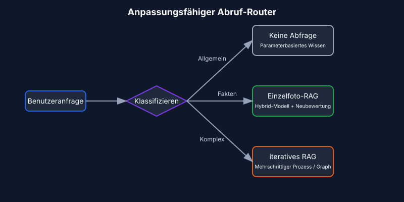
Die Parameter, die Qualität tatsächlich bewegen, sind kleiner, als die Literatur suggeriert. Chunking nach semantischen Grenzen (Absätze, Abschnitte) statt nach fester Größe — Chunking ist die eine Entscheidung, die Retrieval-Qualität auf echten Dokumenten entscheidet. Starte top-k bei 10 bis 20 für hybrides Retrieval und reranke dann auf 3 bis 5 herunter. Nutze MMR mit λ um 0,7 als Default für Diversität. Und füge in deinen Output immer Quellenreferenzen und direkte Zitate ein, nicht weil das Modell ohne sie zwingend halluziniert, sondern weil sie die Antwort auditierbar machen.
4) Memory
Langlebiger Kontext über Turns und Sessions hinweg. Kurzzeit-Memory hält den Gesprächszustand. Langzeit-Memory hält User- und App-Fakten. Episodisches Memory hält Ereignisse. Semantisches Memory hält Entitäten. Nutze Memory, wenn du Personalisierung und Kontinuität willst oder wenn mehrere Agents über Tage oder Wochen hinweg koordiniert arbeiten.
Die Muster, die Produktionskontakt überleben: Entity-Memories (Namen, IDs, Präferenzen) mit expliziten Expiry-Policies; Scoped Retrieval aus einem Long-Term-Store, der auf Vektoren, Key-Value-Paaren oder einem Graphen basiert; und die Kopplung von Memory an Komprimierung, sodass wachsendes Kurzzeit-Memory zusammengefasst statt abgeschnitten wird. Der Summarization-Teil wird in Strategien zur Kontextkomprimierung [7] behandelt.
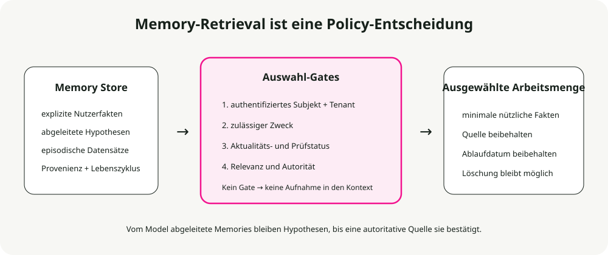
Die Expiry-Policy, die ich standardmäßig verwende:
- Präferenzen: 365 Tage.
- Episodische Ereignisse: 90 Tage.
- Kurzfristiger Zustand: am Ende der Session löschen.
- Entitäten: keine Expiry, aber regelmäßige Validierung erforderlich.
5) Skills
Kombinierbare Domänenexpertise, die Agents bei Bedarf entdecken und laden. Anthropic's Agent Skills-Framework ist das Referenzdesign, um prozedurales Wissen zu erfassen und über Agents hinweg zu teilen.
Einen Skill für einen Agent zu bauen ist wie das Zusammenstellen eines Onboarding-Guides für einen neuen Mitarbeiter. — Anthropic Engineering Blog
Du willst Skills, wenn du domänenspezifische Expertise brauchst (PDF-Manipulation, git, Datenanalyse), wenn du wiederverwendbare Prozeduren über Agents oder Organisationen hinweg willst oder wenn du einen Agent spezialisieren willst, ohne Verhalten fest in den System Prompt zu hardcoden.
Was ist ein Skill?
Ein Skill ist ein strukturierter Ordner mit Instruktionen, Skripten und Ressourcen, den der Agent entdecken und bei Relevanz laden kann:
- Eine Datei
SKILL.mdmit einem Namen, einer Beschreibung (im YAML frontmatter) und den Instruktionen des Skills. - Zusätzliche Dateien — Referenzen, Templates — die der Skill bei Bedarf nachladen kann.
- Code: Python oder andere ausführbare Dateien, die der Agent als Tools ausführen kann.
Skill-Muster: progressive disclosure
Das Prinzip, das Skills skalierbar macht, ist progressive disclosure: Informationen nur laden, wenn sie gebraucht werden. (Die allgemeine Version findest du unten unter Das Prinzip der progressiven Offenlegung.) Beim Start liegen nur Skill-Namen und Beschreibungen im Kontext — genug, damit der Agent weiß, was verfügbar ist. Die vollständige SKILL.md wird erst geladen, wenn der Skill aktiviert wird. Tiefer referenzierte Dateien werden nur geladen, wenn der aktivierte Skill sie wirklich braucht.
Das bedeutet, dass Skill-Inhalte effektiv unbeschränkt sind. Der Agent bezahlt keinen Kontext für das, was er nicht verwendet.
┌─────────────────────────────────────────────────────────┐
│ Context Window │
├─────────────────────────────────────────────────────────┤
│ System Prompt │
│ ├── Core instructions │
│ └── Skill metadata (name + description only) │
│ • pdf: "Manipulate PDF documents" │
│ • git: "Advanced git operations" │
│ • context-compression: "Manage long sessions" │
├─────────────────────────────────────────────────────────┤
│ [User triggers task requiring PDF skill] │
│ │
│ → Agent reads pdf/SKILL.md into context │
│ → Agent reads pdf/forms.md (only if filling forms) │
│ → Agent executes pdf/extract_fields.py (without loading)│
└─────────────────────────────────────────────────────────┘
Best Practices für Skills
Anthropic's Richtlinien laufen auf vier Dinge hinaus. Starte mit Evaluation: Führe den Agent auf repräsentativen Tasks aus, finde die Lücken und schreibe Skills, um sie zu schließen. Strukturiere für Skalierung: Teile eine große SKILL.md in separate Dateien auf, und halte Pfade getrennt, wenn die Kontexte sich gegenseitig ausschließen. Beobachte, wie der Agent deine Skills verwendet, und iteriere bei Namen und Beschreibungen, bis die Trigger-Genauigkeit hoch ist. Und lass den Agent helfen: Bitte Claude, erfolgreiche Vorgehensweisen in wiederverwendbare Skill-Inhalte zu überführen.
Sicherheitsaspekte
Skills bringen per Definition Schwachstellen mit sich — sie geben dem Agent neue Fähigkeiten durch Instruktionen und Code. Installiere sie nur aus vertrauenswürdigen Quellen. Prüfe sie vor der Nutzung, einschließlich gebündelter Dateien, Code-Abhängigkeiten und aller Netzwerkverbindungen. Achte besonders auf Instruktionen, die den Skill mit externen Services verbinden, denn dort beginnt Exfiltration normalerweise.
6) Tools
Function calls, die Daten abrufen oder Aktionen ausführen: APIs, Datenbanken, Search, Dateioperationen, Computer Use. Du willst Tools, wenn du deterministische Side Effects und hohe Datentreue brauchst oder wenn du plan-call-verify-continue-Schleifen orchestrierst.
Die Muster, die ich standardmäßig verwende, sind tool-first planning mit Post-Call-Validatoren, strukturierte Outputs zwischen den Schritten und explizite Fallbacks, wenn Tools scheitern (Retry, dann Degradation, dann Human-in-the-Loop).
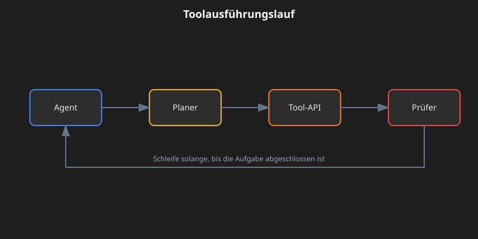
Drei Konzepte, bei denen Präzision wichtig ist. Idempotent bedeutet, dass ein Retry ohne Side Effects sicher ist (GET ja, POST oder DELETE nein). Postconditions sind die Checks, die du nach jedem Call ausführst: nicht-leeres Ergebnis, Status gleich "ok", gültiges JSON. Die Fallback-Kette ist die Reihenfolge, die du durchgehst, wenn etwas schiefläuft: Retry, dann graceful degrade, dann Eskalation an einen Menschen.
Eine Anmerkung zu MCP
MCP wird zum Standard dafür, wie Agents sich mit Tools und Daten verbinden [6]. Statt für jeden Service einen eigenen API-Wrapper zu schreiben, betreibst du für jeden ein MCP-Server und der Agent entdeckt die verfügbaren Tools und Ressourcen automatisch.
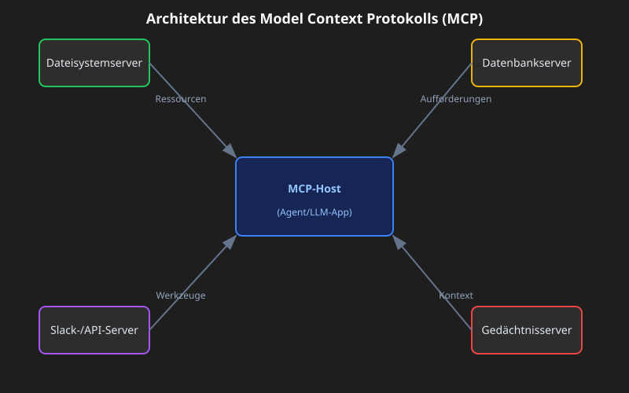
7) Guardrails
Input- und Output-Validierung, Sicherheitsfilter, Jailbreak-Abwehr, Schema Enforcement, Content Policy. Du willst Guardrails, wenn du Compliance oder Markenintegrität brauchst und wenn du typisierte, korrekte Outputs und sicheres Verhalten willst.
Die Form, die in Produktion trägt: programmierbare Rails (Policy-Regeln plus Aktionen), Schema- und semantische Validatoren (Typen, Regex, Evals) und zentrale Policy mit Observability (Dashboards, Red-Teaming).
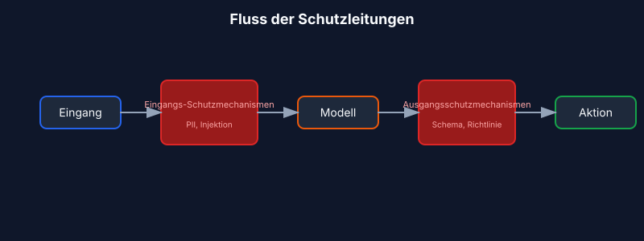
Die Entscheidung Reparatur-versus-Verweigerung ist die, die Teams falsch treffen. Schema-Verletzungen bekommen genau einen automatischen Reparaturversuch; schlägt der fehl, wird mit klarer Fehlermeldung verweigert. Policy-Verletzungen überspringen den Reparaturversuch komplett — sofort verweigern und eine sichere Alternative vorschlagen.
Vier gängige Guardrail-Typen decken die meisten Produktionsanforderungen ab. Input-Guards erkennen PII, Prompt Injection und Toxizität, bevor das Modell sie sieht. Output-Guards erzwingen Schema, Content Policy und faktische Konsistenz. Tool-Guards übernehmen Rate Limiting, Permission Checks und Kostenschwellen. Memory-Guards redigieren PII vor der Speicherung und erzwingen Expiry.
Konkretes Beispiel: ein Support-Bot beantwortet ein Ticket
Hier ist, was die Kontextschicht zusammenstellt, wenn ein Kunde fragt: "Why is my API key not working?":
- Instruktionen: Rolle ist ein hilfreicher Support-Assistent für ACME, Quellen zitieren, JSON
{answer, sources, next_steps}zurückgeben. - Beispiele: zwei kurze Q→A-Paare, die Ton und JSON-Struktur zeigen, eines zu API keys, eines zu Billing.
- Wissen: Help Center und Product Runbooks nach "API key troubleshooting" durchsuchen; relevante Zitate einfügen.
- Memory: Kundenname "Sam", Account-ID "A-123", Plan "Pro", letzte Interaktion "API key created 3 days ago".
- Skills: den Skill
ticket-handlingmit Troubleshooting-Prozeduren, Eskalations-Policies und Resolution-Templates laden. - Tools:
search_tickets(customer_id),check_api_key_status(key),create_issue(description). - Guardrails: API-key-Werte im Output redigieren; wenn das Schema fehlschlägt, einmal reparieren; wenn gegen Policy verstoßen wird (zum Beispiel ein Request, Produktionsdaten zu löschen), höflich verweigern.
Das Modell erhält all diesen strukturierten Kontext, erzeugt eine Antwort, und die Guardrails validieren sie, bevor sie an den Kunden zurückgeht.
Deep Dive in die Grundlagen des Kontexts
Bevor die Muster Sinn ergeben, muss die Anatomie klar sein.
Die Anatomie des Kontexts
Kontext hat mehrere unterschiedliche Komponenten, jeweils mit verschiedenen Eigenschaften und Constraints.
System Prompts definieren die Identität, Constraints und Verhaltensrichtlinien des Agents. Sie werden einmal beim Session-Start geladen und bleiben für das Gespräch bestehen. Der Trick ist, die richtige Flughöhe zu finden: spezifisch genug, um Verhalten tatsächlich zu steuern, aber flexibel genug, um Spielraum für Urteilskraft zu lassen. Gehst du zu tief, lieferst du fragile hardcodierte Regeln aus. Gehst du zu hoch, fehlt dem Modell ein konkretes Signal zum Handeln.
Strukturiere Prompts in getrennte Abschnitte mit XML-Tags oder Markdown-Überschriften:
<BACKGROUND_INFORMATION>
You are a Python expert helping a development team.
Current project: Data processing pipeline in Python 3.9+
</BACKGROUND_INFORMATION>
<INSTRUCTIONS>
- Write clean, idiomatic Python code
- Include type hints for function signatures
- Add docstrings for public functions
</INSTRUCTIONS>
<TOOL_GUIDANCE>
Use bash for shell operations, python for code tasks.
File operations should use pathlib for cross-platform compatibility.
</TOOL_GUIDANCE>
Tool-Definitionen spezifizieren die Aktionen, die der Agent ausführen kann. Jedes Tool hat einen Namen, eine Beschreibung, Parameter und ein Rückgabeformat. Die Beschreibungen sind das, was Verhalten tatsächlich steuert. Schlechte Beschreibungen zwingen den Agent zu raten; gute enthalten Nutzungskontext, Beispiele und sinnvolle Defaults. Das Konsolidierungsprinzip: Wenn ein menschlicher Engineer nicht eindeutig sagen kann, zu welchem Tool gegriffen werden soll, wird ein Agent es auch nicht besser machen. Das ist dein Signal, sie zusammenzuführen oder umzubenennen.
Retrieved Documents ziehen zur Laufzeit relevante Inhalte in den Kontext, statt alles vorab zu laden. Der Just-in-Time-Ansatz hält nur leichte Identifikatoren bereit — Dateipfade, gespeicherte Queries, Web-Links — und lädt die eigentlichen Daten nur bei Bedarf.
Message History ist die Unterhaltung zwischen User und Agent, einschließlich früherer Queries, Antworten und Begründungen. Bei lang laufenden Tasks kann sie das Fenster dominieren. Sie fungiert auch als Scratchpad-Memory, in dem Agents Fortschritt und Task-Status verfolgen.
Tool Outputs sind die Ergebnisse von Agent-Aktionen: Dateiinhalte, Suchergebnisse, Command Output, API-Antworten. In typischen Agent-Trajektorien verbrauchen Beobachtungen am Ende über 80 % des gesamten Kontexts [4]. Diese Zahl ist der Druck hinter Techniken wie Observation Masking und Compaction.
Context Windows und Attention-Mechanik
Sprachmodelle berechnen Attention als paarweise Beziehungen zwischen jedem Token-Paar. Für n Tokens sind das n² Beziehungen. Wenn der Kontext wächst, wird die Fähigkeit des Modells, diese Beziehungen abzubilden, immer dünner.
Modelle übernehmen ihre Attention-Muster zudem aus Trainingsdaten, und diese Daten werden von kürzeren Sequenzen dominiert. Das Modell hat also vergleichsweise wenig Erfahrung mit kontextweiten Abhängigkeiten. Das Ergebnis ist ein Attention Budget, das mit wachsendem Kontext abnimmt.
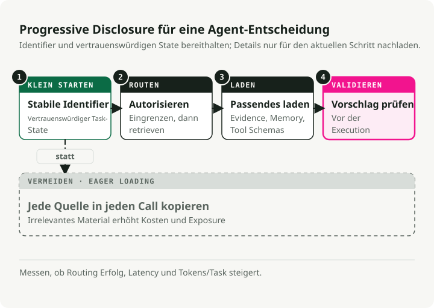
Das Prinzip der progressiven Offenlegung
Progressive disclosure verwaltet Kontext effizient, indem Informationen nur bei Bedarf geladen werden. Beim Start laden Agents nur Skill-Namen und -Beschreibungen — genug, um zu wissen, wann ein Skill relevant sein könnte. Vollständige Inhalte werden erst geladen, wenn sie für spezifische Tasks aktiviert werden.
# Instead of loading all documentation at once:
# Step 1: Load summary
docs/api_summary.md # Lightweight overview
# Step 2: Load specific section as needed
docs/api/endpoints.md # Only when API calls needed
docs/api/authentication.md # Only when auth context needed
Kontextqualität versus Kontextmenge
Die Annahme, dass größere Context Windows Speicherprobleme lösen, ist empirisch widerlegt. Context Engineering bedeutet, die kleinstmögliche Menge hochinformativer Tokens zu finden.
Mehrere Kräfte drängen dich zur Effizienz. Die Verarbeitungskosten wachsen überproportional mit der Kontextlänge — nicht doppelt so hoch bei doppelten Tokens, sondern exponentiell höher in Zeit und Compute. Die Modellleistung sinkt jenseits bestimmter Kontextlängen, selbst wenn das Fenster technisch mehr unterstützt. Und lange Inputs bleiben teuer, selbst mit Prefix Caching.
Das Leitprinzip ist Informativität statt Vollständigkeit. Nimm auf, was für die aktuelle Entscheidung zählt, und schließe aus, was nicht zählt.
Muster der Kontextdegradation
Sprachmodelle zeigen vorhersagbare Degradationsmuster, wenn der Kontext wächst. Diese zu kennen, ist die Voraussetzung, um Fehler zu diagnostizieren und resiliente Systeme zu entwerfen.
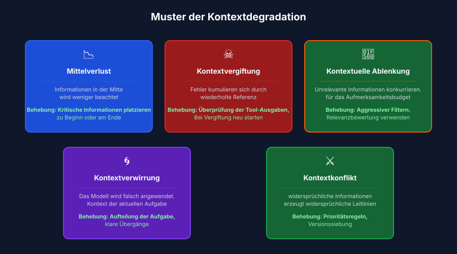
Das Lost-in-the-Middle-Phänomen
Das am besten dokumentierte Degradationsmuster ist "lost-in-middle", bei dem Modelle U-förmige Attention-Kurven zeigen [1]. Informationen am Anfang und Ende des Kontexts erhalten zuverlässig Attention; Informationen in der Mitte leiden unter 10–40 % geringerer Recall-Genauigkeit.
Der Mechanismus ist konkret. Modelle allokieren massive Attention auf das erste Token (oft das BOS-Token), um interne Zustände zu stabilisieren, und erzeugen so ein "attention sink", das Attention Budget verbraucht [2]. Wenn der Kontext wächst, gewinnen Tokens in der Mitte nicht genug Attention-Gewicht.
Die praktische Lösung ist, kritische Informationen an den Anfang oder das Ende des Kontexts zu stellen. Nutze Summary-Strukturen, die Schlüsselinformationen an attention-begünstigten Positionen sichtbar machen.
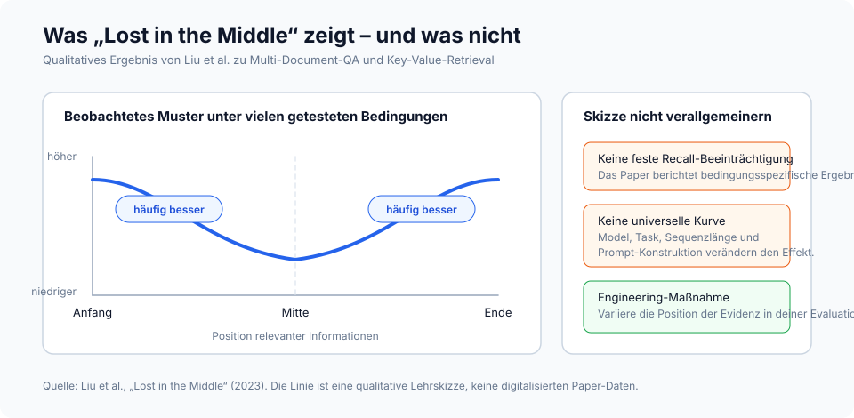
# Organize context with critical info at edges
[CURRENT TASK] # At start
- Goal: Generate quarterly report
- Deadline: End of week
[DETAILED CONTEXT] # Middle (less attention)
- 50 pages of data
- Multiple analysis sections
- Supporting evidence
[KEY FINDINGS] # At end
- Revenue up 15%
- Costs down 8%
- Growth in Region A
Bei Instruktionen, die du auf keinen Fall verlieren darfst, dupliziere sie am Anfang und am Ende. Da Modelle beiden Rändern starke Attention geben, bekommt dieselbe Instruktion an beiden Positionen unabhängig von der Kontextlänge Attention. Das ist der richtige Zug für System-Constraints, die immer befolgt werden müssen, Anforderungen an Output-Formate und Sicherheitsrichtlinien.
# Example: Duplicating critical instructions
[SYSTEM - START]
CRITICAL: Always respond in JSON format. Never include PII.
[... long context with documents, history, tools ...]
[SYSTEM - REMINDER]
CRITICAL: Always respond in JSON format. Never include PII.
Kontextvergiftung
Kontextvergiftung ist das, was passiert, wenn Halluzinationen, Fehler oder falsche Informationen in den Kontext gelangen und sich durch wiederholte Referenzierung verstärken. Ist der Kontext einmal vergiftet, erzeugt er Feedback-Loops, die die falsche Annahme verstärken.
Sie kommt meist durch eine von drei Türen: Tool-Outputs mit Fehlern oder unerwarteten Formaten, Retrieved Documents mit falschen oder veralteten Informationen und modellgenerierte Summaries, die Halluzinationen einführen und dann persistent machen.
Du erkennst sie an Symptomen: schlechtere Output-Qualität bei Tasks, die früher funktioniert haben, Agents, die die falschen Tools oder falschen Parameter wählen, und persistente Halluzinationen, die Korrekturversuche überleben.
Die Wiederherstellung ist mechanisch. Schneide den Kontext auf den Stand vor dem Vergiftungspunkt zurück, markiere die Vergiftung explizit und fordere eine Neubewertung an, oder starte mit sauberem Kontext neu und übernimm nur verifizierte Informationen.
Kontextablenkung
Kontextablenkung entsteht, wenn der Kontext so lang wird, dass das Modell sich übermäßig auf das konzentriert, was du ihm gibst, statt auf das, was es im Training gelernt hat. Forschung zeigt, dass bereits ein einzelnes irrelevantes Dokument die Leistung bei Tasks mit relevanten Dokumenten reduziert [8]. Der Effekt folgt einer Sprungfunktion — das Vorhandensein irgendeines Distraktors löst die Degradation aus.
Die zentrale Einsicht: Modelle können irrelevanten Kontext nicht überspringen. Sie müssen allem Aufmerksamkeit widmen, was bereitgestellt wird, und genau diese Attention ist die Ablenkung, selbst wenn die irrelevante Information offensichtlich nutzlos ist.
Die Gegenmaßnahme ist Relevanzfilterung vor dem Laden von Dokumenten, Namespacing, damit irrelevante Abschnitte leicht ignoriert werden können, und die Frage, ob Information überhaupt im Kontext sein muss oder per Tool Call erreichbar sein kann.
Kontextverwirrung
Kontextverwirrung ist das, was passiert, wenn irrelevante Informationen Antworten auf eine Weise beeinflussen, die die Qualität verschlechtert. Wenn du etwas in den Kontext legst, muss das Modell darauf achten, und das bedeutet, dass es irrelevante Informationen einbeziehen, Tool-Definitionen für eine andere Task verwenden oder Constraints aus einem anderen Kontext anwenden kann.
Warnsignale: Antworten, die den falschen Aspekt einer Query adressieren, Tool Calls, die für eine andere Task richtig aussehen, Outputs, die Anforderungen aus mehreren Quellen vermischen.
Die Lösung ist explizite Task-Segmentierung (verschiedene Tasks bekommen verschiedene Context Windows), klare Übergänge zwischen Kontexten und Zustandsmanagement, das Kontext isoliert.
Kontextkollision
Kontextkollision entsteht, wenn angesammelte Informationen direkt miteinander kollidieren und widersprüchliche Guidance erzeugen. Das ist etwas anderes als Vergiftung, bei der ein Teil falsch ist — bei einer Kollision widersprechen sich mehrere korrekte Teile.
Häufige Quellen sind Multi-Source-Retrieval mit widersprüchlichen Informationen, Versionskonflikte (veraltete und aktuelle Informationen gleichzeitig im Kontext) und Perspektivenkonflikte (gültige, aber inkompatible Sichtweisen).
Löse das durch explizite Konfliktmarkierung, Prioritätsregeln, die festlegen, welche Quelle Vorrang hat, und Versionsfilterung, die veraltete Informationen ausschließt.
Modellspezifische Degradationsschwellen
Die Forschung liefert konkrete Daten dazu, wann die Degradation beginnt. Die effektive Kontextlänge — also der Bereich, in dem Modelle optimale Leistung halten — ist oft deutlich kleiner als das beworbene Maximum [3]:
| Modell | Max. Kontext | Effektiver Kontext | Hinweise zur Degradation |
|---|---|---|---|
| GPT-4 Turbo | 128K tokens | ~32K tokens | Retrieval degradiert nach 32K, Genauigkeit sinkt ab 64K |
| GPT-4o | 128K tokens | ~8K tokens | Komplexe NIAH-Genauigkeit fällt von 99 % auf 70 % bei 32K |
| Claude 3.5 Sonnet | 200K tokens | ~4K tokens | Komplexe NIAH-Genauigkeit fällt von 88 % auf 30 % bei 32K |
| Gemini 1.5 Pro | 1M tokens | ~128K tokens | 99 % NIAH-Recall bei 1M, beste Long-Context-Leistung |
| Gemini 2.0 Flash | 1M tokens | ~32K tokens | Komplexe NIAH-Genauigkeit fällt von 94 % auf 48 % bei 32K |
Quellen: RULER-Benchmark [3], NoLiMa-Benchmark [9], Google Technical Reports.
Die wichtigste Erkenntnis aus RULER [3]: Nur 50 % der Modelle, die 32K+ Kontext beanspruchen, halten bei 32K Tokens eine zufriedenstellende Leistung. Nahezu perfekte Scores auf einfachen Needle-in-a-Haystack-Tests übertragen sich nicht auf echtes Long-Context-Verständnis — komplexe Reasoning-Tasks zeigen deutlich stärkere Degradation.
Strategien zur Kontextkomprimierung
Terminologie-Hinweis: Kontextkomprimierung ist ein Oberbegriff, der Summarization (für Gesprächshistorie und Memory), Observation Masking (für Tool-Outputs) und selektives Trimming umfasst [5]. Die im Abschnitt Memory erwähnte Memory-Summarization ist eine Anwendung dieser breiteren Komprimierungsstrategien.
Wenn Agent-Sessions Millionen von Tokens an Gesprächshistorie erzeugen, ist Komprimierung nicht mehr optional. Der naive Ansatz ist aggressive Komprimierung, um Tokens pro Request zu minimieren. Das richtige Optimierungsziel ist Tokens pro Task [4]: insgesamt verbrauchte Tokens, um die Task abzuschließen, einschließlich der Kosten für erneutes Abrufen, wenn Komprimierung etwas Kritisches verliert.
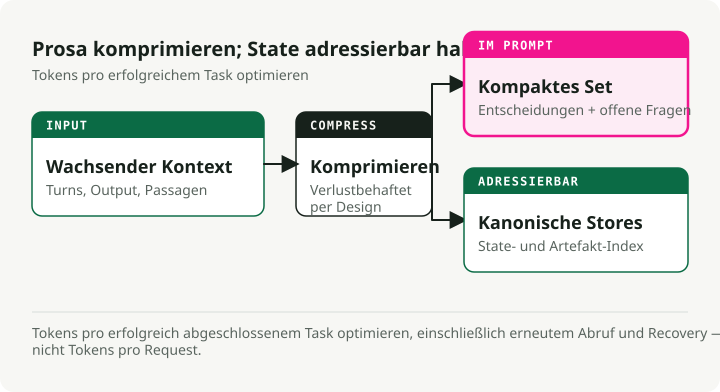
Wann Komprimierung nötig ist
Aktiviere Komprimierung, wenn Agent-Sessions die Grenzen des Context Window überschreiten, wenn Agents anfangen zu "vergessen", welche Dateien sie verändert haben, wenn du eine lange Coding-Session debugst, die sich über Stunden gezogen hat, oder wenn die Leistung in längeren Gesprächen spürbar sinkt.
Drei produktionsreife Ansätze
Anchored iterative summarization hält eine strukturierte persistente Summary mit expliziten Abschnitten für Session-Intention, Dateimodifikationen, Entscheidungen und nächste Schritte. Wenn Komprimierung ausgelöst wird, wird nur der neu abgeschnittene Bereich zusammengefasst und in die bestehende Summary eingemischt. Der Grund, warum das funktioniert: Struktur erzwingt Erhaltung. Dedizierte Abschnitte wirken wie eine Checkliste, die der Summarizer füllen muss, und verhindern stilles Driften.
## Session Intent
Debug 401 Unauthorized error on /api/auth/login despite valid credentials.
## Root Cause
Stale Redis connection in session store. JWT generated correctly but session could not be persisted.
## Files Modified
- auth.controller.ts: No changes (read only)
- config/redis.ts: Fixed connection pooling configuration
- services/session.service.ts: Added retry logic for transient failures
- tests/auth.test.ts: Updated mock setup
## Test Status
14 passing, 2 failing (mock setup issues)
## Next Steps
1. Fix remaining test failures (mock session service)
2. Run full test suite
3. Deploy to staging
Opaque compression erzeugt komprimierte Repräsentationen, die auf Rekonstruktionsgenauigkeit optimiert sind. Sie erreicht die höchsten Kompressionsraten (99 %+), opfert aber Interpretierbarkeit. Nutze sie, wenn maximale Token-Einsparung zählt und erneutes Abrufen billig ist.
Regenerative full summary erzeugt bei jeder Komprimierung eine detaillierte strukturierte Summary. Der Output ist lesbar, aber Details können über wiederholte Komprimierungszyklen hinweg zerfallen.
Vergleich der Komprimierung
Forschung von Factory.ai [4] verglich Komprimierungsstrategien auf realen Produktions-Agent-Sessions:
| Methode | Kompressionsrate | Qualitätswert | Am besten geeignet für |
|---|---|---|---|
| Anchored Iterative | 98,6% | 3,70/5 | Lange Sessions, Dateiverfolgung |
| Regenerative | 98,7% | 3,44/5 | Klare Phasengrenzen |
| Opaque | 99,3% | 3,35/5 | Maximale Einsparung, kurze Sessions |
So liest du die Metriken:
- Kompressionsrate (98,6%): Prozentsatz der entfernten Tokens. Eine Rate von 98,6 % bedeutet, dass von 100.000 Tokens Historie nur 1.400 übrig bleiben.
- Qualitätswert (3,70/5): gemessen via Probe-based Evaluation — nach der Komprimierung werden dem Agent Fragen gestellt, die das Erinnern spezifischer Details aus der abgeschnittenen Historie erfordern (welche Dateien haben wir verändert, was war die Fehlermeldung). 3,70/5 bedeutet, dass der Agent grob 74 % der Probes korrekt beantwortet hat.
- 0,7 % zusätzliche Tokens: Vergleicht man anchored iterative (98,6 %) mit opaque (99,3 %), beträgt die Differenz 0,7 %. Für eine 100K-Token-Session sind das 1.400 Tokens gegenüber 700. Die zusätzlichen 700 Tokens (0,7 % des Originals) kaufen 0,35 Qualitätspunkte (3,70 vs. 3,35) — also deutlich besseren Recall für task-kritische Details.
Das Problem der Artifact Trail
Die Integrität der Artifact Trail ist die schwächste Dimension über alle Komprimierungsmethoden hinweg und erreicht nur 2,2–2,5 von 5,0 Punkten. Coding-Agents müssen wissen, welche Dateien sie erstellt, geändert oder gelesen haben, und genau das geht durch Komprimierung oft verloren.
Empfehlung: Implementiere zusätzlich zur allgemeinen Summarization einen separaten Artifact-Index oder explizites File-State-Tracking im Agent-Scaffolding.
Strategien zum Auslösen von Komprimierung
| Strategie | Auslösepunkt | Trade-off |
|---|---|---|
| Fester Schwellenwert | 70–80 % Auslastung | Einfach, kann aber zu früh komprimieren |
| Sliding Window | Letzte N Turns + Summary behalten | Vorhersagbare Kontextgröße |
| Importance-based | Zuerst gering relevante Teile komprimieren | Komplex, erhält aber Signal |
| Task-boundary | Bei abgeschlossenen Tasks komprimieren | Saubere Summaries, unvorhersehbares Timing |
Probe-based evaluation
Traditionelle Metriken wie ROUGE erfassen funktionale Komprimierungsqualität nicht. Eine Summary kann hohen lexikalischen Overlap haben und trotzdem genau den einen Dateipfad verlieren, den der Agent wirklich braucht.
Probe-based Evaluation misst Qualität direkt, indem nach der Komprimierung Fragen gestellt werden:
| Probe-Typ | Was er testet | Beispielfrage |
|---|---|---|
| Recall | Faktenerhalt | "What was the original error message?" |
| Artifact | Dateiverfolgung | "Which files have we modified?" |
| Continuation | Task-Planung | "What should we do next?" |
| Decision | Reasoning-Kette | "What did we decide about the Redis issue?" |
Wenn die Komprimierung die richtigen Informationen erhalten hat, antwortet der Agent korrekt. Wenn nicht, rät er oder halluziniert.
Techniken zur Kontextoptimierung
Kontextoptimierung erweitert die effektive Kapazität durch Komprimierung, Masking, Caching und Partitionierung. Diese Techniken bauen auf den obigen Strategien zur Kontextkomprimierung auf und wenden sie systematisch für Produktion an. Richtig umgesetzt kann Optimierung die effektive Kontextkapazität verdoppeln oder verdreifachen, ohne ein größeres Modell zu benötigen.
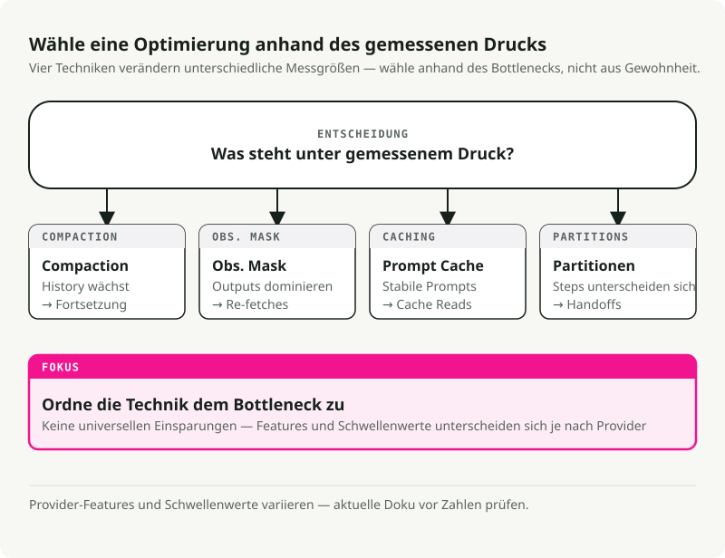
Compaction-Strategien
Compaction fasst Kontextinhalte zusammen, wenn Limits näherkommen, und initialisiert dann mit der Summary neu. Der Punkt ist, Inhalte mit hoher Treue zu destillieren, damit der Agent mit minimaler Degradation weiterarbeiten kann.
Die Prioritätsreihenfolge, der ich folge: zuerst Tool-Outputs komprimieren (durch Summaries ersetzen), dann alte Turns (frühe Gesprächsteile zusammenfassen), dann Retrieved Documents (zusammenfassen, falls neuere Versionen existieren). Den System Prompt niemals komprimieren.
Was erhalten bleiben sollte, hängt vom Typ ab. Tool-Outputs: Findings, Metriken, Schlussfolgerungen behalten; rohen, ausführlichen Output verwerfen. Konversationsturns: Entscheidungen, Commitments und Kontextwechsel behalten; Füllmaterial verwerfen. Retrieved Documents: Schlüsselfakten und Claims behalten; unterstützende Ausführungen verwerfen.
Observation Masking
Tool-Outputs können über 80 % des Token-Verbrauchs ausmachen [4]. Sobald ein Agent einen Tool-Output für eine Entscheidung genutzt hat, sinkt der Wert, den vollständigen Output im Kontext zu halten.
Eine Entscheidungs-Matrix für Masking:
| Kategorie | Aktion | Begründung |
|---|---|---|
| Beobachtungen der aktuellen Task | Nie maskieren | Kritisch für aktuelle Arbeit |
| Letzter Turn | Nie maskieren | Direkt relevant |
| Aktives Reasoning | Nie maskieren | Laufender Denkprozess |
| 3+ Turns zurück | Masking erwägen | Zweck vermutlich erfüllt |
| Wiederholte Outputs | Immer maskieren | Redundant |
| Boilerplate | Immer maskieren | Geringes Signal |
KV-cache-Optimierung
Der KV-cache speichert Key- und Value-Tensoren, die während der Inferenz berechnet werden. Caching über Requests mit identischen Präfixen hinweg vermeidet Neuberechnung und reduziert Kosten und Latenz drastisch.
Optimiere für Caching, indem du stabile Inhalte an den Anfang stellst:
# Stable content first (cacheable)
context = [system_prompt, tool_definitions]
# Frequently reused elements
context += [reused_templates]
# Unique elements last
context += [unique_content]
Entwirf auf Cache-Stabilität: Vermeide dynamische Inhalte wie Zeitstempel in Prompts, nutze konsistente Formatierung und halte die Struktur über Sessions hinweg stabil.
Kontextpartitionierung
Die aggressivste Optimierung ist, Arbeit über Sub-Agents mit isolierten Kontexten zu partitionieren. Jeder Sub-Agent arbeitet in einem sauberen Kontext, der auf seine Subtask fokussiert ist, ohne angesammelten Kontext aus anderen Subtasks mitzutragen.
Für die Aggregation gilt: Validieren, dass alle Partitionen abgeschlossen sind, kompatible Ergebnisse zusammenführen und zusammenfassen, falls der kombinierte Output immer noch zu groß ist.
Entscheidungsrahmen für Optimierung
Wann optimieren: Wenn die Kontextauslastung 70 % überschreitet, die Antwortqualität in längeren Gesprächen sinkt, Kosten durch lange Kontexte hochkriechen oder die Latenz mit der Gesprächslänge steigt.
Was du anwenden solltest, hängt davon ab, was dominiert. Dominieren Tool-Outputs, nutze Observation Masking. Dominieren Retrieved Documents, nutze Summarization oder Partitionierung. Dominiert Message History, nutze Compaction mit Summarization. Dominieren mehrere Komponenten, kombiniere Strategien.
Sinnvolle Zielmetriken: Compaction mit 50–70 % Tokenreduktion bei unter 5 % Qualitätsverlust; Masking mit 60–80 % Reduktion in maskierten Beobachtungen; Cache-Optimierung mit 70 %+ Hit Rate für stabile Workloads.
So setzt du es um (Schritt für Schritt)
Ein praktisches Rezept für die Kontextschicht. Starte einfach und füge Komplexität erst hinzu, wenn etwas kaputtgeht.
Schritt 1: den Vertrag schreiben
Definiere, was dein Agent tun muss und wie er sich verhalten soll. Schreibe die System-Level-Policies (Rolle, Constraints, Sicherheitsregeln) und die Developer-Level-Guidelines (Output-Format, Ton, Zitationsanforderungen). Definiere JSON Schemas für jede Output-Struktur: AnswerSchema, PlanSchema, StepResultSchema.
Schritt 2: eine Retrieval-Strategie wählen
Starte mit hybridem Retrieval (BM25 plus Vector) und einem Reranker. Route dann nach Query-Typ. Allgemeinwissen braucht kein Retrieval. Aktuelle oder private Fakten brauchen Single-Shot-RAG (hybrid plus rerank). Komplexe mehrteilige Queries brauchen iteratives RAG (in Subqueries aufteilen).
Schritt 3: Memory entwerfen
Trenne Short-Term (Conversation State) von Long-Term (User-Fakten, Historie). Short-Term hält den Gesprächszustand und die letzten paar Turns und wird dann am Ende der Session gelöscht. Long-Term hält User-Entitäten, Präferenzen und episodische Ereignisse. Setze Expiry-Regeln: Präferenzen 365 Tage, episodisch 90 Tage, Short-Term nur für die Session. Füge PII-Redaction hinzu, bevor irgendetwas gespeichert wird.
Schritt 4: Tools spezifizieren
Definiere klare Tool-Signatures mit Validierung und Fallback-Strategien. Schreibe für jedes Tool einen klaren Docstring, ein Input-Schema und ein Output-Schema. Markiere, ob es idempotent ist. Definiere Postconditions und die Fallback-Kette. Validiere Tool-Argumente vor dem Aufruf gegen das Schema.
Schritt 5: Guardrails installieren
Füge Input- und Output-Validierung, Sicherheitsfilter und Policy-Enforcement hinzu. Die minimale Checkliste:
- [ ] PII (E-Mails, SSNs, Kreditkarten) vor der Verarbeitung redigieren.
- [ ] Alle Outputs gegen JSON Schema validieren.
- [ ] Prompt-Injection-Versuche blockieren.
- [ ] Tool Calls rate-limiten.
- [ ] Alle Policy-Verletzungen für Auditing loggen.
Schritt 6: Observability und Evals hinzufügen
Instrumentiere die Kontextschicht, damit du sie debuggen kannst. Tracing dafür, welche Kontextquellen geladen wurden; Token-Zählungen (Input, Output, Kosten); Retrieval-Metriken (Query, top-k, zitierte Quellen); Tool Calls (welche Tools, Argumente, Ergebnisse, Fehler); und Guardrail-Trigger (Input-Blocks, Output-Reparaturen, Policy-Verweigerungen).
Die wichtigsten Metriken sind Exactness (Schema-Gültigkeit, Ziel 99 %+), Groundedness (Zitationsrate, Ziel 90 %+ für wissensbasierte Queries), Latenz (Ziel unter 2 s p95) und Kosten (Ziel unter $0.05 pro Query).
Schritt 7: iterieren
Füge fortgeschrittene Muster erst hinzu, wenn du klare Grenzen erreichst. Füge Reflections hinzu, wenn die Fehlerrate über 5 % steigt. Füge Planner hinzu, wenn Tasks regelmäßig mehr als drei sequenzielle Schritte brauchen. Füge Sub-Agents hinzu, wenn du getrennte Domänen mit isolierten Kontexten hast.
Anti-Patterns
Häufige Fehler, die agentische Systeme ruinieren. Vermeide sie.
1. Stuff-the-window
Bei jeder Query jedes mögliche Dokument, jeden Memory-Eintrag und jedes Beispiel in den Kontext dumpen. Das Ergebnis ist Context Rot — das Signal-Rausch-Verhältnis kollabiert und du triffst alle Degradationsmuster gleichzeitig. Siehe Muster der Kontextdegradation für die Details zu Ablenkung und Verwirrung. Die Lösung ist adaptive Routing sowie Komprimierung und Masking. Siehe Techniken zur Kontextoptimierung.
2. Unvalidierte Tool-Ergebnisse
Der Agent ruft ein Tool auf, bekommt Daten zurück und gibt sie sofort ungeprüft an das Modell weiter. Fehlformatierte Daten crashen die Downstream-Logik. Null-Ergebnisse verursachen Halluzinationen. Das ist einer der wichtigsten Vektoren für Kontextvergiftung. Validiere Tool-Ergebnisse immer gegen Schema und Postconditions.
3. Everything one-shot
System-Policy, Developer-Guidelines, Beispiele, User-Query, Memory und Wissen werden in einen einzigen monolithischen Prompt gepresst. Keine Trennung der Verantwortlichkeiten. Das Context Window füllt sich mit doppelter Boilerplate. Trenne langlebige Instruktionen von schrittspezifischem Kontext und nutze die obigen Muster zur KV-cache-Optimierung.
4. Unbegrenztes Memory
Jede User-Interaktion für immer speichern und bei jeder Query alles laden. Der Kontext füllt sich mit veraltetem, irrelevanten Memory und du nimmst Datenschutzrisiken gratis mit. Siehe das Lost-in-the-Middle-Phänomen, warum Inhalte in der Mitte ohnehin ignoriert werden. Setze Retention-Policies, implementiere Scoped Retrieval und redigiere PII.
5. RAG überall
Für jede Query Dokumente abrufen, selbst für "What is 2+2?" oder "Hello." Das verschwendet Latenz und Kosten, und das Retrieval injiziert Rauschen, das Kontextablenkung auslöst. Implementiere Adaptive-RAG-Routing mit einem Klassifikator oder einem kleinen Satz Heuristiken.
6. Guardrail-Trigger ignorieren
Du loggst Guardrail-Verletzungen, schaust sie dir aber nie an. Echte Angriffe rutschen durch. Echte UX-Probleme bleiben unbemerkt. Schema-Reparaturen sollten nicht häufig sein — wenn doch, sind deine Instruktionen unklar. Prüfe Guardrail-Trigger wöchentlich.
7. Keine Evals
Änderungen an der Kontextschicht ohne Tests ausrollen. Stille Regressionen, keine Möglichkeit, Varianten objektiv zu vergleichen. Definiere vor dem Rollout fünf bis zehn Eval-Szenarien, führe sie bei jeder Änderung aus und nutze Probe-based Evaluation, um Probleme bei der Komprimierungsqualität zu erkennen.
Quick Wins: Das kannst du heute ausrollen
Wenn du bereits einen Agent in Produktion hast und sofortige Verbesserungen willst, starte hier. Alles davon dauert weniger als einen Tag.
1. Output-Schema-Validierung hinzufügen
Fängt den Großteil der Fehler ab, bevor sie Nutzer erreichen.
from jsonschema import validate, ValidationError
def validate_output(output: dict) -> dict:
try:
validate(instance=output, schema=ANSWER_SCHEMA)
return output
except ValidationError as e:
repaired = auto_repair(output, e)
validate(instance=repaired, schema=ANSWER_SCHEMA)
return repaired
2. Grundlegendes Tracing instrumentieren
Debugging wird deutlich schneller, wenn etwas kaputtgeht.
logger.info(json.dumps({
"request_id": request_id,
"query": query,
"context_loaded": {"instructions": True, "memory": True, "knowledge": True},
"tokens": {"input": 1200, "output": 150},
"latency_ms": 1120,
"result": "success"
}))
3. System- und User-Nachrichten trennen
Reduziert Token-Verschwendung deutlich, weil KV-cache-Optimierung möglich wird.
messages = [
{"role": "system", "content": SYSTEM_POLICY + DEVELOPER_GUIDELINES},
{"role": "user", "content": f"Query: {query}\nMemory: {memory}\nKnowledge: {knowledge}"}
]
4. Zitationsanforderungen hinzufügen
Schafft Vertrauen, ermöglicht Auditing, reduziert Halluzinationen.
5. Memory-Expiry setzen
Verhindert Kontextverschmutzung und Datenschutzrisiken.
def load_memory(customer_id: str) -> dict:
entries = db.get_memory(customer_id)
now = datetime.now()
return {
k: v for k, v in entries.items()
if v.get("expires_at", now) > now
}
Fazit
Context Engineering ist die Disziplin, die Demo-Agents von Produktions-Agents trennt. Das Modell ist nicht schlechter geworden — der Kontext schon. Die vier Hebel, die du kennen solltest: Grundlagen (Kontext ist endlich, Attention ist begrenzt, progressive disclosure ist der Schlüssel), Degradationsmuster (lost-in-middle, poisoning, distraction, confusion, clash), Komprimierung (tokens-per-task statt tokens-per-request, strukturierte Summaries) und Optimierung (compaction, masking, caching, partitioning).
Starte mit den Quick Wins. Füge Komplexität erst hinzu, wenn du an eine echte Grenze stößt. Und miss alles — du kannst nicht verbessern, was du nicht tracest.
Dieser Artikel enthält Inhalte aus der Agent Skills for Context Engineering Collection, einer Sammlung wiederverwendbarer Wissensmodule zum Bau besserer AI-Agents.
References
-
Liu, N. F., Lin, K., Hewitt, J., Paranjape, A., Bevilacqua, M., Petroni, F., & Liang, P. (2023). "Lost in the Middle: How Language Models Use Long Contexts." arXiv preprint arXiv:2307.03172. https://arxiv.org/abs/2307.03172
- Zentrale Erkenntnis: 10–40 % geringere Recall-Genauigkeit für Informationen in der Mitte des Kontexts gegenüber Anfang/Ende.
-
Xiao, G., Tian, Y., Chen, B., Han, S., & Lewis, M. (2023). "Efficient Streaming Language Models with Attention Sinks." ICLR 2024. https://arxiv.org/abs/2309.17453
- Führt das Phänomen des "attention sink" ein, bei dem LLMs unverhältnismäßig viel Attention auf initiale Tokens legen.
-
Hsieh, C. Y., et al. (2024). "RULER: What's the Real Context Size of Your Long-Context Language Models?" COLM 2024. https://arxiv.org/abs/2404.06654
- Zentrale Erkenntnis: Nur 50 % der Modelle, die 32K+ Kontext beanspruchen, halten bei 32K Tokens eine zufriedenstellende Leistung.
-
Factory.ai Research. (2025). "Evaluating Context Compression for AI Agents." https://www.factory.ai/blog/evaluating-context-compression
- Quelle für Vergleiche von Komprimierungsstrategien, tokens-per-task-Optimierung und die Methodik der probe-based evaluation.
-
Li, Y., et al. (2023). "Compressing Context to Enhance Inference Efficiency of Large Language Models." EMNLP 2023.
- Forschung zu selektivem Context Pruning mit Self-Information-Metriken.
-
Anthropic. (2024). "Model Context Protocol (MCP) Specification." https://modelcontextprotocol.io/
- Offizielle Spezifikation für den MCP-Standard zur AI-Tool-Integration.
-
LangChain/LangGraph. (2024). "How to add memory to the prebuilt ReAct agent." https://langchain-ai.github.io/langgraph/how-tos/create-react-agent-memory/ — Zeigt, dass Summarization eine Technik ist, um Memory innerhalb von Kontextgrenzen zu verwalten.
-
Yoran, O., Wolfson, T., Bogin, B., Katz, U., Deutch, D., & Berant, J. (2024). "Making Retrieval-Augmented Language Models Robust to Irrelevant Context." ICLR 2024. https://arxiv.org/abs/2310.01558
- Zentrale Erkenntnis: Schon ein einzelnes irrelevantes Dokument kann die RAG-Leistung deutlich reduzieren und einen "distracting effect" erzeugen.
-
Maekawa, S., et al. (2025). "NoLiMa: Long-Context Evaluation Beyond Literal Matching." ICML 2025. https://arxiv.org/abs/2502.05167
- Zentrale Erkenntnis: GPT-4o effektiver Kontext ~8K Tokens, Claude 3.5 Sonnet ~4K Tokens, wenn latentes Reasoning nötig ist (vs. Literal Matching). Bei 32K Tokens fällt GPT-4o von 99,3 % auf 69,7 % Genauigkeit.
Zusätzliche Ressourcen
- Anthropic Claude Documentation: Best Practices für Long-Context-Nutzung
- OpenAI Cookbook: Strategien zum Management von Context Windows
- LangChain Documentation: Memory- und Retrieval-Muster
- LlamaIndex Documentation: RAG- und Chunking-Strategien